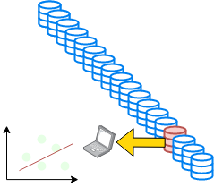

Introduction to Machine Learning (1/2)
AI for Research, ESCP, 2023-2024
Tabular Data

tabular data
Networks
- Banking networks
- Production network

Big Subfields of Machine Learning
- Traditional classification
- supervised (labelled data)
- regression: predict quantity
- classification: predict index (categorical variable)
- unsupervised (no labels)
- dimension reduction
- clustering
- semi-supervised / self-supervised
- reinforcement learning
- supervised (labelled data)
- Bazillions of different algorithms: https://scikit-learn.org/stable/user_guide.html
- regression:
- Predict: \(y = f(x; \theta)\)

| Age | Activity | Salary |
|---|---|---|
| 23 | Explorer | 1200 |
| 40 | Mortician | 2000 |
| 45 | Mortician | 2500 |
| 33 | Movie Star | 3000 |
| 35 | Explorer | ??? |
- supervised: classification
- Output is discrete
- Regular trick: \(\sigma(f(x; \theta))\) where \(\sigma(x)=\frac{1}{1-e^{-x}}\)

| Age | Salary | Activity |
|---|---|---|
| 23 | 1200 | Explorer |
| 40 | 2000 | Mortician |
| 45 | 2500 | Mortician |
| 33 | 3000 | Movie Star |
| 35 | 3000 | ??? |
unsupervised
- organize data without labels
- dimension reduction: describe data with less parameters
- clustering: sort data into “similar groups” (exemple)
| Age | Salary | Activity |
|---|---|---|
| 23 | 1200 | Explorer |
| 40 | 2000 | Mortician |
| 45 | 2500 | Mortician |
| 33 | 3000 | Movie Star |
| 35 | 3000 | Explorer |
unsupervised: clustering

unsupervised: clustering
Women buying dresses during the year:

Long data
Long data is characterized by a high number of observations.


- Modern society is gathering a lot of data.
- in doesn’t fit in the computer memory so we can’t run a basic regression
- In some cases we would also like to update our model continuously:
- incremental regression
We need a way to fit a model on a subset of the data at a time.
Not everything goes wrong all the time


- In practice, choosing the right learning rate \(\lambda\) is crucial
- \(\lambda\) is a metaparameter of the model training.

Traintest
The test set reveals that orange model is overfitting.
How to choose the validation set?
A more robust solution: \(k\)-fold validation
- split dataset randomly in \(K\) subsets of equal size \(S_1, ... S_K\)
- use subset \(S_i\) as test set, the rest as training set, compute the score
- compare the scores obtained for all \(i\in[1,K]\)
- they should be similar (compute standard deviation)
- average them